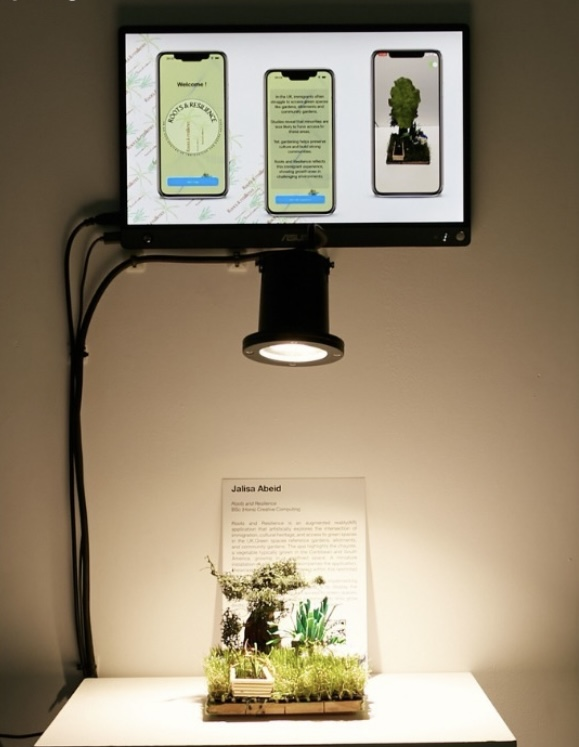

Roots & Resilience
is an augmented reality app and microcosmic installation that artistically shows the difficulties and discomfort immigrant communities face due to limited access to green spaces; while also celebrating their resilience and ability to cultivate their agriculture within controlled environments.
The project investigates the intersection of immigration, cultural heritage, and green space access in the UK, referencing gardens, allotments, and community gardens as vital spaces for growing, gathering, and preserving cultural identity.
Duration
March 2024 – June 2024
Category
Augmented Reality, Sculptural Microcosm
User Experience
The app introduces the context of the artwork before transitioning to the AR camera view.
When the physical installation is detected in-frame, a 3D animation of a chayote,
a vegetable commonly grown in Caribbean cultures, begins to grow. The chayote grows awkwardly and uncomfortably within the confined space, yet ultimately flourishes and expands beyond it.
This growth mirrors the immigrant experience: resilience, adaptation, and transformation despite constraint.
Process
Challenges & Solutions
One of the main challenges faced was transferring the vertex animations from Blender into Swift/ARKit, as the framework doesn’t natively support Blender’s more fluid or mesh-based animations. ARKit is optimised for performance and primarily supports skeletal or transform-based animations.
To overcome this, I exported a series of keyframes as static models and stored them in a list. In the app, I looped through this list to simulate the original animation — effectively recreating a frame-by-frame vertex animation within ARKit.